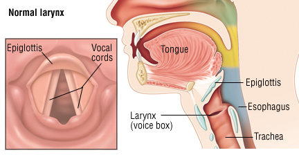
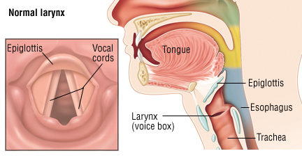
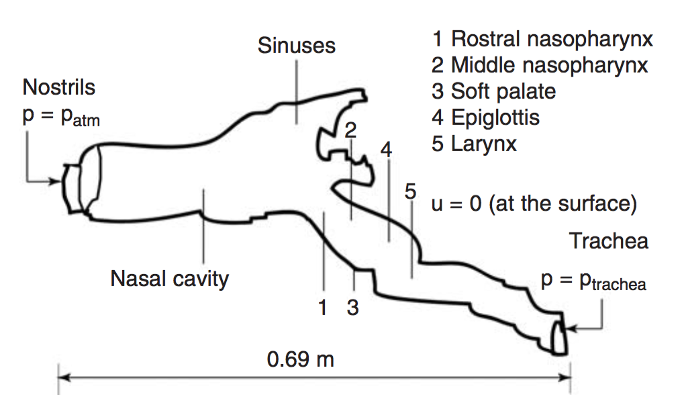
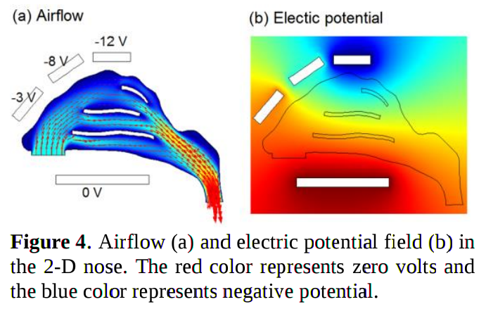
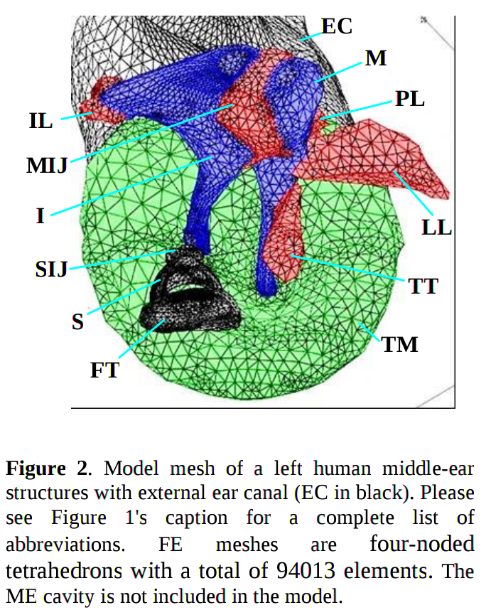
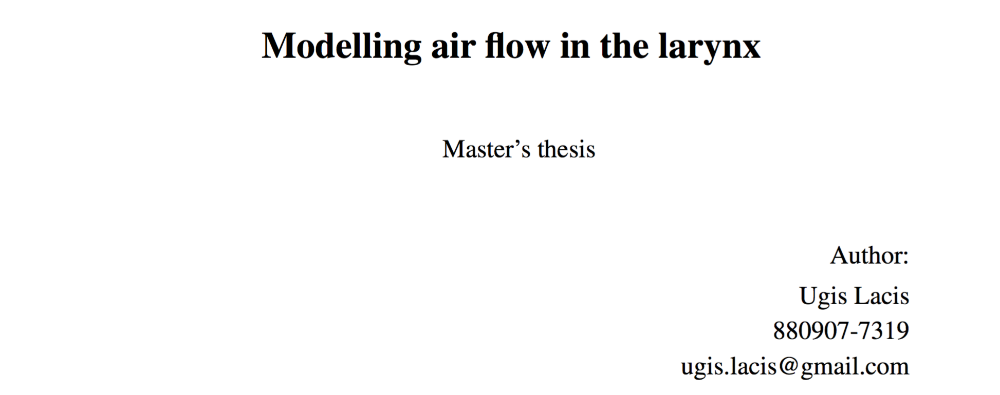

Modelling and simulation of human organ systems
The human voice box and COMSOL MultiphysicsWork-in-progress
11.05.2016
Alexander Lundervold
Dept. of Computing, Mathematics and Physics, HiB
The problem
Want to simulate airflow through the larynx
 

A complicated geometry
Rakesh 2008
Why?
Exercise-induced laryngeal obstructionChanges in epiglottic fold geometry leading to breathing problems
The approach
- DOMAIN: obtain a realistic 3D geometry
- PHYSICS: Navier-Stokes, fluid-structure interaction, turbulence
- MESH: design appropriate mesh
- SOLVE: use suitable numerical methods
- VALIDATE: Compare with lab measurements (pressure)
- Iterate

The selected tool

Why COMSOL?
- Widely used in computer-aided engineering
- Good support for relevant physics: fluid mechanics and structural or solid mechanics
- Rapid prototyping. Short iterations.
- Flexible: custom differential and algebraic equations
- Compatible with other tools (especially MATLAB)
Some relevant models in COMSOL
 Blood vessel:
Larynx-modeling in COMSOL:

The geometry
Image acquisition: Image sources like MRI and CT
Segmentation: find the larynx in the images
Reconstruction: assemble a 3D model from the images


The physics
Fluid flow: Navier-Stokes. Turbulent flow.
Structural mechanics: pressure and viscous forces
Fluid-structure interaction (FSI): deformable and moving structures interacting with internal fluid flow

Fluid and particle dynamics
The mesh
Complicated geometry: must use coarse mesh on parts of domain to lower computation time
Refined near rapidly moving vocal folds
Adapt mesh to solution: use flow properties to recalculate optimal node locations
Conforming mesh: fluid-structure interaction
Study mesh sensitivity
The analysis
- Validate: compare aerodynamical results with lab measurements. 3D printed version tested in wind tunnel
- Predict: predict the effect of abnormal anatomy or function (e.g. exercise-induced laryngeal obstruction)
- Modify: predict the effect of surgery and medication
Vision
Modeling organ systems using engineering tools
Augment medical research and practice with mechanical and electrical engineers, physicists and mathematicians.
Idrett, helse og funksjon (athletics, health and function) at HiB